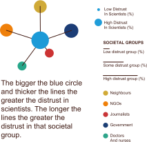

Societal Institutions
29 countries out of 144 distrust scientists equally or more than other societal groups.
How much or how little are different societal groups in a country trusted, and does this affect trust in scientists?
Globally, A general distrust of society correlates with distrust of scientists in a country. Distrust in neighbours (0.8) is more correlated to distrust in scientists than distrust in government (0.38). In LMICs, scientists (70%) are only slightly more likely to be trusted as compared with journalists (64%) and non-profits (60%). In HICs, scientists more likely to be trusted as compared with journalists (54%).
Countries perception of science being shaped by overall trust levels raises questions about the extent to which science is seen as an objective and non-political practise.
Countries which show high distrust in society also show high distrust in scientists.
High Income
Upper Middle Income
Lower Middle Income
Low Income
Q12 In general, would you say that you trust science a lot, some, not much, or not at all?
Distrust in society: The mean of questions Q11A - Q11F answering not much or not all covering neighbours, government, journalists, doctors and nurses and NGOs.
Negative experiences with the state, non-profits, journalists, neighbours, doctors and nurses colour the perception of science and scientists.
In LMIC countries, scientists (70%) are only slightly more likely to be trusted as compared with journalists (64%) and nonprofits (60%). In HIC, scientists are generally more trusted (76%) and also much more likely to be trusted as compared with journalists (54%).
Doctors and nurses are the least distrusted of all members of society.
The trust in government question was not asked in many countries.
Globally, distrust neighbours (0.8) is more correlated to distrust in scientists than distrust in government (0.38).
CASE STUDY
SOUTH AFRICA
Of our focus countries, South Africans are amongst the most distrustful in the world (top 20%), on the measures of trust in society and science.
South Africa showed highly correlated relationships between trust in science and trust in other members of society.
In terms of absolute numbers, the most distrusted segment of society was the national government, with 53% of people stating that they had “not much, or not trust at all” in them.
Photography by Piqsels
We took a closer look at the key milestones of distrust in South Africa where the government politicized science at the cost of public health outcomes.
1. Bhana, D., Morrell, R., Shefer, T., & Ngabaza, S. (2010). South African teachers' responses to teenage pregnancy and teenage mothers in schools. Culture, health & sexuality, 12(8), 871-883.
2. Mbeki Aids denial 'caused 300,000 deaths' https://www.theguardian.com/world/2008/nov/26/aids-south-africa
3. Sidley, P. (2000). Mbeki appoints team to look at cause of AIDS. BMJ: British Medical Journal, 320(7245), 1291.
4. Nomandla Yako, who defied Thabo Mbeki by importing HIV medicines, has died https://www.groundup.org.za/article/nomandla-yako-who-defied-thabo-mbeki-importing-hiv-medicines-has-died/
5. Gow, J. A. (2009). The adequacy of policy responses to the treatment needs of South Africans living with HIV (1999-2008): a case study. Journal of the international AIDS society, 12(1), 37.
6. Chigwedere, P., Seage III, G. R., Gruskin, S., Lee, T. H., & Essex, M. (2008). Estimating the lost benefits of antiretroviral drug use in South Africa. JAIDS Journal of Acquired Immune Deficiency Syndromes, 49(4), 410-415.
7. Watson, J. (2005). Scientists, activists sue South Africa's AIDS 'denialists'.
8. Petersen, I., Bhana, A., Campbell-Hall, V., Mjadu, S., Lund, C., Kleintjies, S., ... & Mental Health and Poverty Research Programme Consortium. (2009). Planning for district mental health services in South Africa: a situational analysis of a rural district site. Health Policy and Planning, 24(2), 140-150.
9.Herman, A. A., Stein, D. J., Seedat, S., Heeringa, S. G., Moomal, H., & Williams, D. R. (2009). The South African Stress and Health (SASH) study: 12-month and lifetime prevalence of common mental disorders. South African medical journal, 99(5).
10. http://www.safmh.org/documents/policies-and-legislations/MENTAL%20HEALTH%20POLICY%20FRAMEWORK%202013-2020.pdf
11. Das-Munshi, J., Lund, C., Mathews, C., Clark, C., Rothon, C., & Stansfeld, S. (2016). Mental health inequalities in adolescents growing up in post-apartheid South Africa: cross-sectional survey, SHaW study. PloSone, 11(5), e0154478.
12. https://www.gov.za/speeches/gauteng-health-terminates-life-healthcare-esidimeni-contract-21-oct-2015-0000
13. https://theconversation.com/south-africa-isnt-managing-mental-illness-particularly-for-the-poor-50410
14. https://www.theguardian.com/global-development/2018/oct/14/emaciated-mutilated-dead-the-mental-health-scandal-that-rocked-south-africa
CASE STUDY
VIETNAM
Low distrust ≠ Trust in Vietnam
Trust is asymmetric in Vietnam. It shows low levels of distrust in society but higher levels of distrust in science and scientists. From a global level, this level of distrust in science and scientists is average, but intriguingly, Vietnam is one of the lowest in the world for saying they trust science and scientists. They have very large proportions replying “don’t know”.
Photography by Chinh Le Duc on Unsplash.

Key Takeway
29 countries out of 144 distrust scientists equally or more than other societal groups. Socio-political events and societal actors play an important role in the public perception of trust in science. Some of these events are well known - others less so. Understanding the existing landscape and contextualising interventions is necessary to ensure uptake and adoption.
Opportunity
How might science better understand, record and account for contextual complexity?
The Lens of
Societal Institutions
How much or how little are different societal groups in a country trusted, and does this affect trust in scientists?
Negative experiences with the state, non-profits, journalists, neighbours, doctors and nurses may color the perception of science and scientists. Use this lens to understand how much or how little are the different societal groups in a country trusted, and whether this affects trust in scientists.
